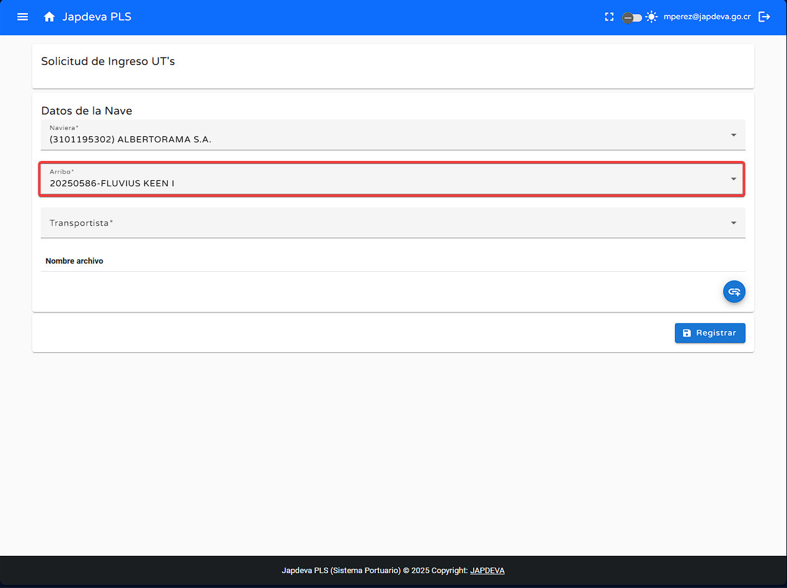
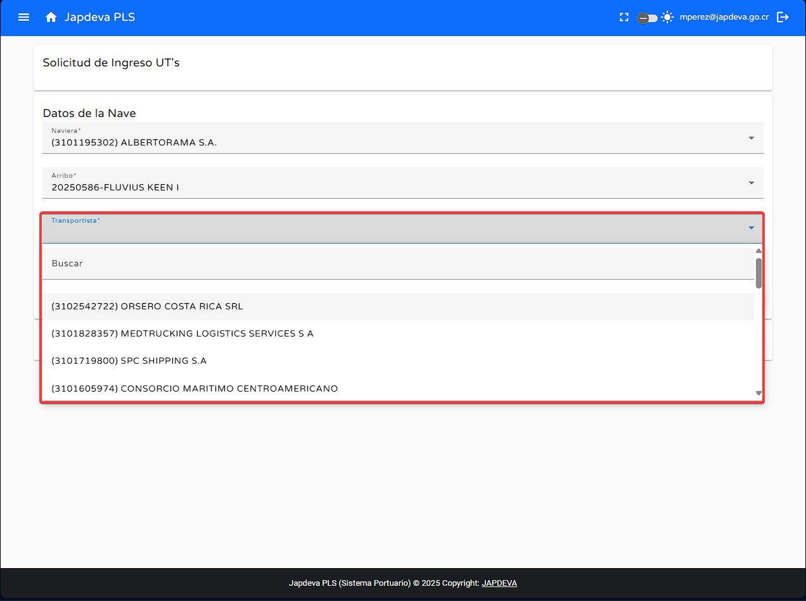
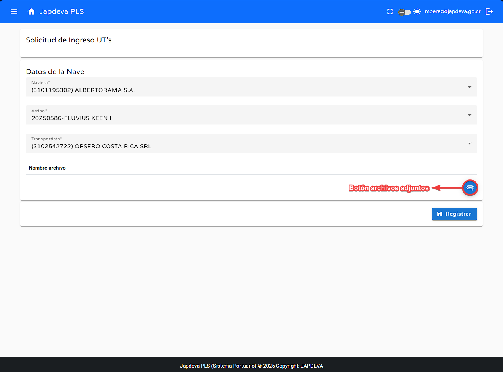
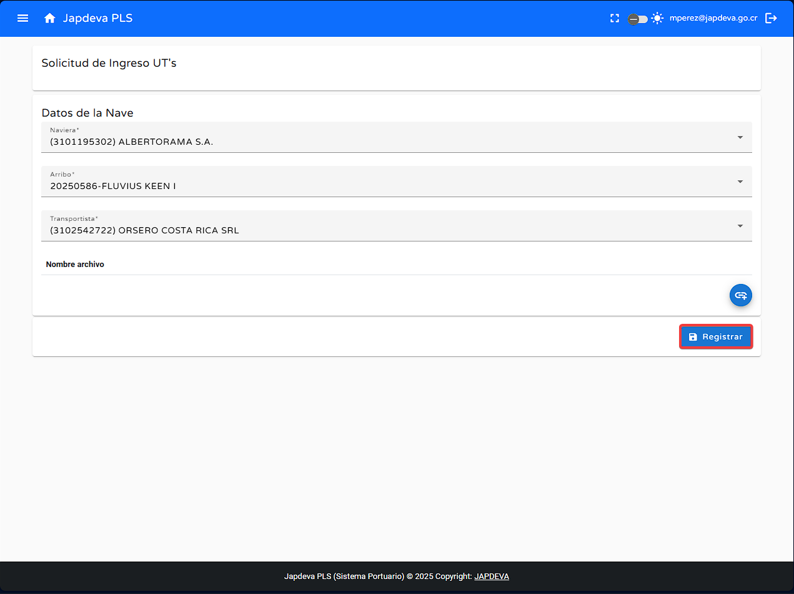

2. Funciones principales
1
Registro de solicitud para ingreso de UT's
Para realizar el registro correccto de la solicitud se deben de manejar los datos de la siguiente manera:
- Lo primero que se debe realizar es seleccionar la Naviera correspondiente que trabajará con la nave.
- Seguido al punto anterior se puede seleccionar el Arribo correspondiente a la nave. 
- Por último, antes de lograr de manera satifactoria la solicitud de ingreso se debe seleccionar al Transportista que trabajará con la nave. 
- Una vez realizados los pasos anteriores se pueden agregar archivos adjuntos si han de ser necesarios. 
- Con todos los puntos listos y los archivos adjuntos agregados se puede proseguir a registrar la solicitud de ingreso. 